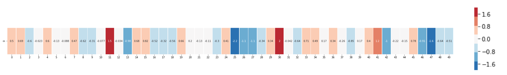

Word embeddings
class notes
Introduction
Textual information is a type of unstructured data. This means that we must give it some kind of structure to work with it.
Bag of Words model
A classic approach to structure textual information is building a Bag of Words (BoW). For this we build a Term-Frequency Matrix (TFM), where:
- each row is a document from the corpus and each column is a term from the vocabulary
- each cell denotes the appearance of a word in a document. There are different types of counting: from a binary (it appears or not), the frequency, to the normalized frequency, and the Term-Frequency Inverse Document Frequency (TF-IDF), among others.
- We can now think of each document as a vector over the vocabulary, and vice-versa each term is a vector over the documents of the corpus.
This classic approach for text mining allowed to use formal methods to automatically study large corpuses, but it has some limitations:
- It does not preserve the order of language, the structure and sequential order of words and n-grams are lost
- it suffers from high dimensionality (the number of columns is the number of unique words in the vocabulary, a very high number, around ~10,000 for a medium sized corpus), and
- since each text will only uses a subset of words, most cells in TFM are zero; this is called sparsity
- High dimensionality and sparsity have a high computational burden and reduce the quality of results for many automatic techniques.
Word embeddings
The central idea of word embeddings can be summarized in John Firth’s quote:
“you shall know a word by the company it keeps”.
- The hypothesis behind word embeddings is that, in some way, word contexts are strongly correlated with their meaning.
- Words that appear “close” probably have similar meanings.
- Word embedding also seek to represent textual data in a vectorial form;
- this representation aims to be smaller than that of a TFM, generally between 100 and 300 dimensions
Word embeddings are learned from a corpus (usually large) of text. Using word contexts, word embeddings models seek to capture the semantics of such words.
We could represent the problem that word embedding models seek to solve following (Kozlowski, Taddy, and Evans 2019):
The main question is:
how to represent all the words of a corpus in a \(k\)-dimensional space that also preserves the distances between the \(n\) words across the \(m\) contexts?.
One of the differences between the many techniques for training a word embedding will be how they define those “contexts” and how they operate with them.
Assumptions
The traditional BoW worked on the assumption that words were independent from each other1 (they were all equally represented as columns). Since an embedding is trained based on its context, the assumption of independence between words is greatly attenuated.
The use of context allows for interaction between words, so a lower dimensionality than that in BoW is expected.
Geometrical representation of meaning
One of great advantages of word embeddings is that it brings a geometrical representation of words. The resulting \(k\)-dimensional space in which we codify words is a representation of their meaning.
Semantically similar words will be close in space and therefore will have a high similarity; conversely, words with very different meanings will be far apart in space and thus will show low values in the similarity metric. In fact, it’s expected that synonyms will be very close.
The following figure illustrates this idea:
There are four words embedded in this model of \(k=2\) (two dimensions): “cat”, “dog”, “wolf”, and “tiger”.
We can think of the semantic relationships between these words as geometric transformations and vector operations in this \(k=2\) space.
The same vector allows us to move from “cat” to “tiger” and from “dog” to “wolf”.
In that sense, we could try to interpret that vector as a dimension that tells us about the “wild” or “domestic” nature of an animal.
In real-world applications of word embeddings, there are many significant geometric transformations, such as “gender” vectors or vectors that tell us about the number (plural or singular) of a word.
- Although it was also used with traditional methods, the metric of cosine similarity gained popularity with embeddings as a measure of how close two words are in the embedding space: the cosine similarity is defined as the cosine of the angle between two vectors; that is, the dot product of the vectors divided by the product of their lengths:
\[cos(A,B) = \frac{A \times B}{||A|| \times ||B||}\]
Varies between -1 and 1
- -1 means that the two vectors are opposite
- +1 that the vectors are proportional, and
- 0 that the vectors are orthogonal.
- In the Discussion section, we will see two papers (Kozlowski, Taddy, and Evans 2019), (Garg et al. 2018) that make use of these types of transformations with sociologically relevant concepts (class, wealth, etc.).
To conclude this general approach, let’s see a slightly more realistic example:
- Let’s imagine we have the following vector representing the word “king”. It’s a strip of 50 numbers.

- On its own, it’s not very useful, so we can contrast it with other words in the embedding.

- Intuitively, from the color-coded chart, we can see that the vectors for “man” and “woman” appear to be more similar to each other.
Let’s extend the list of words in the embedding a bit:

“Woman” and “girl” are similar to each other in several places in the vector; the same goes for “man” and “boy”
“boy” and “girl” also show some similarities in certain elements of the vector, which are different from “man” or “woman”. The question here is whether these elements of the vector manage to somehow encode a sense of “youth”
the last word (“water”) is the only one representing an object and not a person: it can be seen that the vector for this word is quite contrasting to the rest of the words in the figure
there are several places where “king” and “queen” resemble each other and differ from all the others. What could they be representing?
Earlier we talked about the possibility of word embeddings encoding some semantic dimensions.
Let’s see the following example (quite classic) based on an analogy: what is to “woman” what “king” is to “man”? This is a typical analogy question: the answer is clear from semantics: “queen”.
We can pose this type of analogy problem based on vector operations in a word embedding
We can take the vector “king”, subtract the vector “man” from it, and add the vector “woman” to it. That gives us an “artificial” vector.

Then, we can search among all the vectors in the embedding which one is the closest (using cosine similarity metric) to this generated vector.
It seems like magic, but the one that is closest is the vector for “queen”2.
Classical word embeddings techniques
So far, we’ve spoken in very general terms about word embedding models. While we won’t delve into the specific technical details of each model (for that, you can refer to each model’s references), we will give a general overview of some of the first approaches.
Word2Vec
W2V is one of the first methods for word embeddings. It was developed by Google in 2013(Mikolov, Chen, et al. 2013) (Mikolov, Sutskever, et al. 2013).
How does word2vec works?
Each word in the vocabulary is represented as a one-hot encoded vector3.
It uses a shallow neural network with either a continuous bag of words (CBOW) or skip-gram architecture.
- In CBOW, the model predicts the target word based on the context words within a window around the target word.
- In skip-gram, the model predicts context words given a target word.
Once the model is trained, the weights of the hidden layer (between the input and output layers) are used as word embeddings.
GloVe
GloVe(Pennington, Socher, and Manning 2014) differs from Word2Vec in its approach to learning word embeddings.
- The main difference with word2vec is that it starts by constructing a co-occurrence matrix from the corpus.
- This matrix captures how frequently words co-occur within a context window.
- The context can be defined based on words within a fixed window size or using other contextual information like sentence boundaries.
FastText
FastText (Bojanowski et al. 2017) (Joulin et al. 2016) is an extension of the Word2Vec model developed by Facebook AI Research. It shares similarities with Word2Vec but introduces several innovations, particularly in how it represents words and handles out-of-vocabulary words. In summary:
- FastText represents words as a bag of character n-grams (subword units). This allows FastText to capture morphological information and handle out-of-vocabulary words efficiently.
- That is why it can generate embeddings for out-of-vocabulary words by summing the embeddings of their constituent character n-grams. This makes FastText more robust to rare and unseen words compared to traditional word embedding models.
How to access word embeddings
To work with word embedding models, there are two basic approaches.
Train an embedding from scratch based on a specific task: if we were to train a classification model for literary works, we could generate a vector representation of the vocabulary from the corpus. Then, we could use that representation as input to construct features for the classification model.
- The advantage of this approach is that the embedding is likely to be a highly efficient representation of our corpus.
- The disadvantage is that large corpora are required to get a good representations of words4.
- Many times we don’t have a corpus that large.
So, a very common option is to use a pre-trained model.
This approach is based on the principle of transfer learning: the idea that it’s possible to apply a learned model to solve a similar or related task without having to train another model from scratch.
If the corpus on which a word embedding is trained is large and representative enough of a language, we can consider that model as a first general representation of the language, or at least of the semantics of that language.
If this is true, then the embedding managed to capture certain aspects of the word meanings that are general and not restricted to a specific corpus.
We can use a pre-trained embedding and apply it to a specific task for our specific corpus. In thisc ase, we use the embedding as input to generate the features of our classification model.
The difference is that we don’t train the embedding ourselves but rather use one that is already pre-trained.
Pre-trained word embeddings were a first milestone in the paradigm shift in NLP that we are currently experiencing. With the appearance of Large Language Models (LLMs), we stopped thinking about training a model for every task and every corpus we want to solve. Currently, it’s more common, for specific tasks such as hate speech detection (Pérez et al. 2023), to use some pre-trained model and perform a fine-tuning process. Fine-tuning means taking the parameters of a pre-trained model and modifying only some of its parameters to adapt it to a new domain.
Word embeddings, document embeddings and LLM’s
Another extremely useful feature of word embeddings is that it’s possible to generate embeddings of documents, sentences, or paragraphs.
In fact, we can create an embedding of a given document by obtaining all the vectors of each of the words that compose it and adding them along each of their dimensions. We will see how to implement this in the guided practice.
Transformer models and LLMs use different forms of embeddings in some of their layers. While it exceeds the scope of this class, it’s important to mention that the embeddings we work with here are “static”, meaning there is only one embedding per word. An innovation of transformer models is the introduction of of dynamic embeddings.
For instance,
"I sat on the bank of the river" and "I deposited money in the bank"Both sentences use the term “bank” in two different senses (a seat or a financial institution).
Models like word2vec or GloVe or FastText generate the same embedding for both sentences, so they would not be able to capture these two different meanings.
Contextual embeddings solve this problem by generating different vectors depending on the context in which the word appears.
ELMO (Peters et al. 2018) was one of the first models to use this form of contextualized embeddings.
This, along with other innovations such as self-attention mechanisms (Vaswani et al. 2023), opened the possibility of training larger and more general language models (LLMs).
Discussion
- The utility of these models from a computer science perspective is clear. Indeed, word embeddings marked a qualitative leap in the evolution of NLP. The application of transfer learning techniques to this domain resulted in improvements in many tasks such as automatic translation, text classification, etc.
- A big warning that needs to be made on these models (and language models in general) is that they tend to implicitly encode cultural biases. The corpora use to train this models is not exempt from the bias of their times. The model will learn the implicit associations between words. This can be dangerous when the models are used for sensitive tasks, like text classification and automatic translation. (Bender et al. 2021) develops a systematic exposition of these problems.
- However, for social sciences, this feature opens an extremely interesting possibility: that of analyzing and quantifying such cultural biases and stereotypes. By analyzing a large and representative corpus of a language or a specific society, word embeddings can be used to identify how certain forms of inequality are expressed and reproduced in language.
Here, we will present two examples in which social scientists used this characteristic of language models as a tool to study biases.
First example
(Kozlowski, Taddy, and Evans 2019) uses word2vec and other models based on various corpora5, to generate word embeddings over the period 1900-2000. - They construct a series of independent dimensions (class, wealth, gender, status, etc.) and compare them with different cultural dimensions. The following figure illustrates this:

- The first panel (A) shows the construction of the “affluence” dimension. It is constructed by calculating the difference between vectors of word pairs: \(rich - poor\), \(priceless-worthless\), etc. These vectors are then averaged, which results in the “affluence” dimension.
- Next, the cosine similarity is calculated between this “affluence” dimension and different terms related, for example, to cultural goods.
- This allows them to “project” them onto the “affluence” dimension. Panel B shows the position of different sports.
- Thus, “camping” and “boxing” appear strongly associated with the poverty pole, while “golf” and “tennis” are associated with the rich pole of the “affluence” dimension.
Discuss Panel C shows the position of sports in two dimensions: “affluence” and “gender”. What can you observe in this figure?
- They also perform different comparisons with other cultural dimensions over time and several validations with external sources (such as a survey of cultural consumption).
Second example
(Garg et al. 2018) aims to show how word embeddings can illustrate the historical evolution of gender and ethnic stereotypes.
- They trained embeddings using word2vec and GloVe from different datasets: for the present analysis, the Google News dataset, and for historical analysis, they use models trained previously on Google Books/Corpus of Historical American English (COHA).
- They find clear correlation between ethnic and gender biases, in one hand, and occupation participation rates, in the other.
- They show how adjective associations in the embeddings offer insights into the evolving perceptions of various demographic groups.
References
Footnotes
Interestingly, the assumption of independence was once a big jump forward for computational linguistics, and allows for the implementation of models such as Naive Bayes. Lifting this assumption with word embeddings is what more recently allowed for another big step in the field.
↩︎These types of analogy tasks are often used to evaluate the performance of word embeddings. There is a series of relatively common questions used to calculate the accuracy of each embedding model. Thus, for example, questions like “What is to Greece what Paris is to France?” are used to compare the embedding’s “response” to the real response. (Mikolov, Chen, et al. 2013) used about 8,869 semantic questions and about 10,675 syntactic questions.↩︎
This means that each word is represented as a vector where all elements are zero except for one element which represents the index of that word in the vocabulary↩︎
For example, in (Pennington, Socher, and Manning 2014), the original paper of GloVe, one of the most commonly used embedding models, different trial models were trained on the following corpora: 2010 Wikipedia dump (1 billion tokens), 2014 Wikipedia dump (1.6 billion tokens), Gigaword 5 (4.3 billion tokens). Then, they combine Gigaword 5 and Wikipedia 2014. This often entails relatively long training times.↩︎
They use the Google NGram dataset, containing around a million books, and Google News, which contains a large number of news articles↩︎